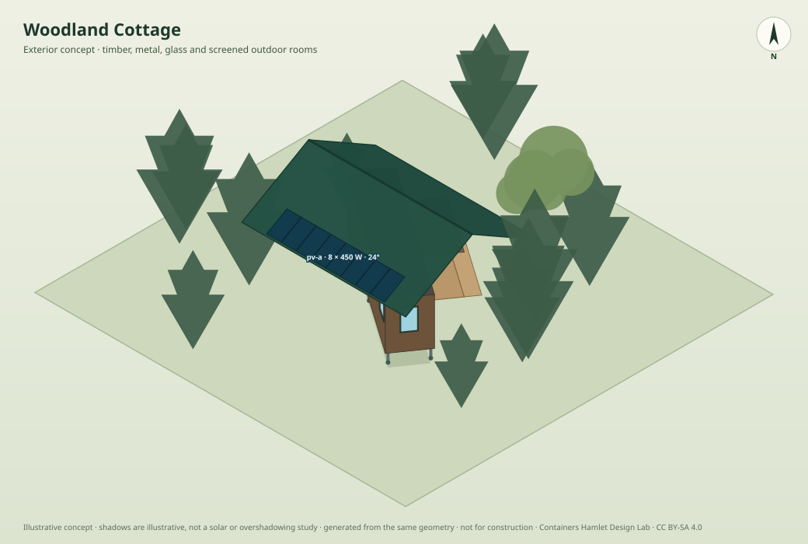

Illustration package
Woodland Cottage
1 storey · 1 module · gable roof · Cabin A
A compact, step-free cottage under a pitched roof, with a covered porch and direct garden access.
Generated prompt for Woodland Cottage
Create a photorealistic architectural illustration of the Woodland Cottage residence. Use the accompanying architectural reference SVG as the authoritative source for building geometry. This is a conceptual architectural illustration, not a photograph of an existing building. The building has 1 occupied storey and 1 container module. Module geometry: - m1: 1 storey, 12.19 m x 2.44 m, base elevation 0.6 m, rotation 0 degrees, timber cladding. Roof: gable at 24 degrees, 0.8 m overhang, installed PV array. Openings: - m1: north window "Bedroom window" at 1.8 m, 1.4 x 1.3 m, sill 0.9 m; north window "Kitchen window" at 6.2 m, 1 x 1.2 m, sill 1.1 m; south window "Bathroom window" at 4.4 m, 0.8 x 1 m, sill 1.4 m; south sliding-door "Garden doors" at 8.4 m, 2.4 x 2.1 m, sill 0 m; south door "Step-free entrance" at 6.1 m, 0.95 x 2.1 m, sill 0 m; west window "Living window" at 1.2 m, 1 x 1.3 m, sill 0.9 m. Outdoor spaces: - p1: 5.4 m x 2.8 m covered porch on the south face of m1, roofed. - d1: deck beyond p1, projecting 1 m. Site: Cabin A. Principal view: Heron Lake seen through cedar and pine, with the far shore low on the horizon. Path approach recorded as east. Camera: exterior three-quarter view, 1.6 m eye height, 35 mm lens, world bearing 280 degrees. Presentation: late summer, late afternoon, clear, no people. Material policy: strict documented. Preserve the documented materials. Do not invent a material for an unspecified element. Restrictions: do not add or remove storeys, modules, windows, doors, stairs, balconies, porches, decks, rooms, roof features or structural supports. Do not change module positions, rotations or offsets. Do not add landscape elements that contradict the assigned site. Unresolved matters to carry into the illustration notes: - Rooms are longitudinal zones. Partitions, fixtures, door swings and interior camera geometry are not modeled. Do not claim a spatially accurate interior perspective. - The site path approach is east while the design entrance is south. The generated prompt does not call any side the main approach without qualification. - Interior geometry is provisional. Partitions, doors and fixtures may be incomplete. - Room room-m1-m1-z1 is inferred from a zone band, not an authored layout. - Room room-m1-m1-z2 is inferred from a zone band, not an authored layout. - Room room-m1-m1-z3 is inferred from a zone band, not an authored layout. - Room room-m1-m1-z4 is inferred from a zone band, not an authored layout. - No interior doors are modeled. Room connectivity cannot be assessed. This is an interpretation for communication. It is not a construction drawing and must not be used to verify dimensions, structure, accessibility or code compliance.
Negative prompt and unresolved matters
extra storeys, extra containers, changed module offsets, changed rotations, missing or duplicated modules, wrong roof form, wrong roof pitch, extra windows, missing windows, extra doors, missing doors, extra balconies, extra stairs, garage, basement, dormers, extra rooms, extra porches, extra decks, structural supports not shown, chimney not recorded, skylights not recorded, warped straight lines, floating building, impossible cantilever, duplicate openings, inconsistent perspective, text, labels, watermarks, logos, tropical plants, wrong season, wrong site view, neighbouring buildings not recorded, lake or meadow in the wrong direction, missing guardrails, unsafe stairs, blocked egress, exposed structural collapse, missing fire separation
- interior-partitions: Rooms are longitudinal zones. Partitions, fixtures, door swings and interior camera geometry are not modeled. Do not claim a spatially accurate interior perspective.
- site-approach: The site path approach is east while the design entrance is south. The generated prompt does not call any side the main approach without qualification.
- provisional-interior: Interior geometry is provisional. Partitions, doors and fixtures may be incomplete.
- inferred-room: Room room-m1-m1-z1 is inferred from a zone band, not an authored layout.
- inferred-room: Room room-m1-m1-z2 is inferred from a zone band, not an authored layout.
- inferred-room: Room room-m1-m1-z3 is inferred from a zone band, not an authored layout.
- inferred-room: Room room-m1-m1-z4 is inferred from a zone band, not an authored layout.
- doors-missing: No interior doors are modeled. Room connectivity cannot be assessed.
8 unresolved/limitation notes · design hash 79828fb3